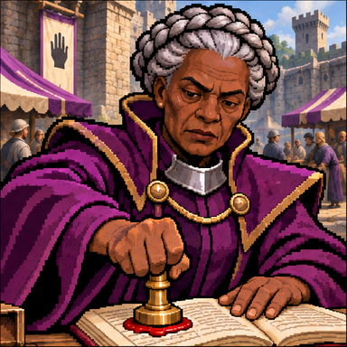

Maereth Ashledger
The Auditor of Oaths
Personal traits: Organized, Philosophical
Inherited: Guardsman
The free-land towns demand that noble Families prove their obligations as rigorously as common conscripts must.
Maereth inherited a village muster book in which the same dead men had paid military taxes for three generations. Her investigation exposed a hereditary Order that collected their equipment money while sending their descendants to war without armor. Now a league of free-land towns accepts her judgments before those of the estates, although her insistence that a sworn contract outranks a charitable exception has ruined honest households as well as corrupt ones.
Portrait direction
Vibe: Exacting civic judgment
Palette: Deep aubergine purple dominant, antique brass secondary, pale parchment highlights
Activity: Presses a brass judgment stamp into red wax on an open muster ledger, bent wrist and firm downward motion visible
Clothes: High-collared aubergine magistrate gown with broad angular sleeves and a narrow plain steel gorget